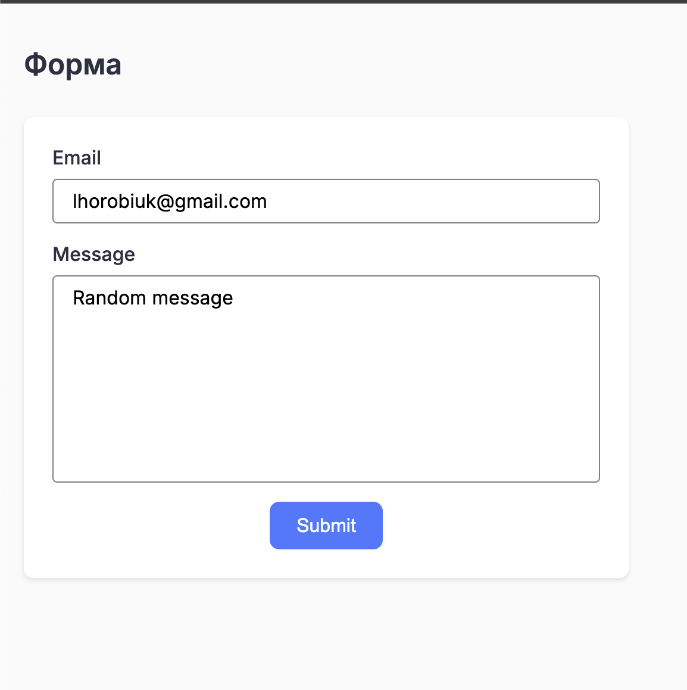
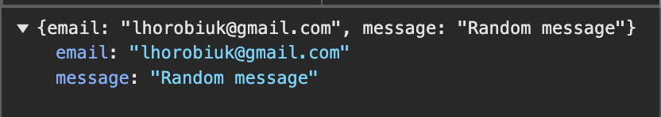
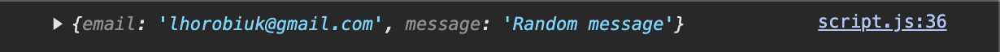

Інформація про лабораторну роботу
Тема:
WEB-СХОВИЩЕ. WEB STORAGE API. МОДУЛЬНОСТЬ КОДУ. СТВОРЕННЯ МОДАЛЬНОГО ВІКНА. ДЕЛЕГУВАННЯ ПОДІЙ.
Мета:
придбати практичні навички роботи створення модального вікна; повторити процес створення макету, зокрема створення макету галереї довільних зображень; закріпити навички роботи з делегуванням подій.
Розташування:
- WEB-застосунок:
https://lihorpc.github.io/cinehub/ - Звітний документ:
https://lihorpc.github.io/cinehub-report/
Галерея

Галерея зображень з ховер ефектом

Галерея зображень з модальним вікном

Форма
Дані з форми зберігаються у локальне сховище
Скріншот результату в консолі
Висновки
В ході виконання лабораторної роботи №8 було досягнуто наступних результатів:
- Освоєно роботу з Web Storage API та локальним сховищем даних
- Створено модальне вікно для перегляду зображень галереї
- Набуто практичних навичок роботи з делегуванням подій